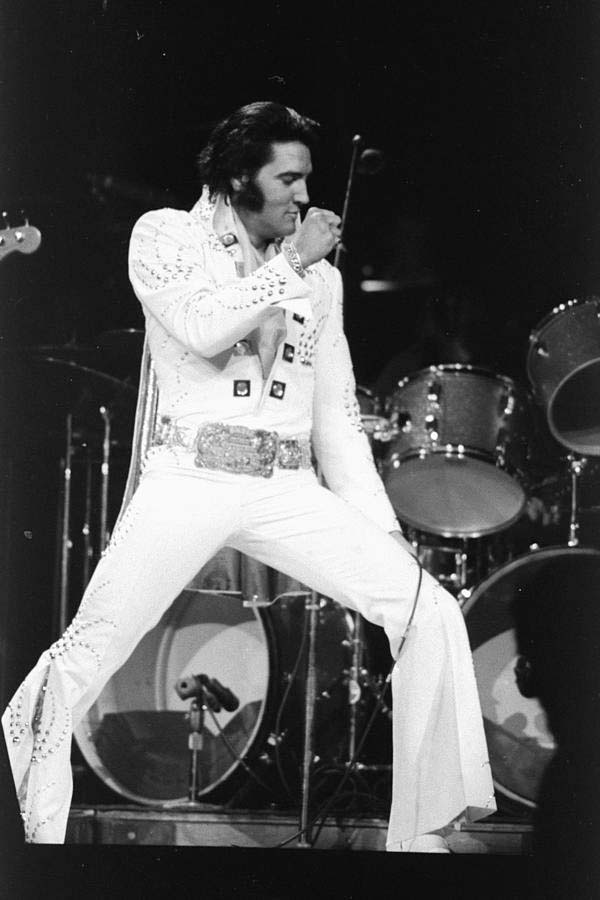
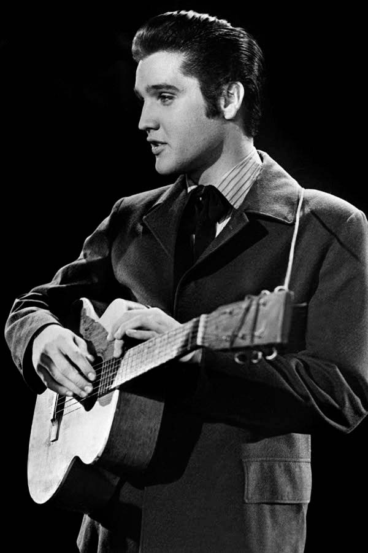
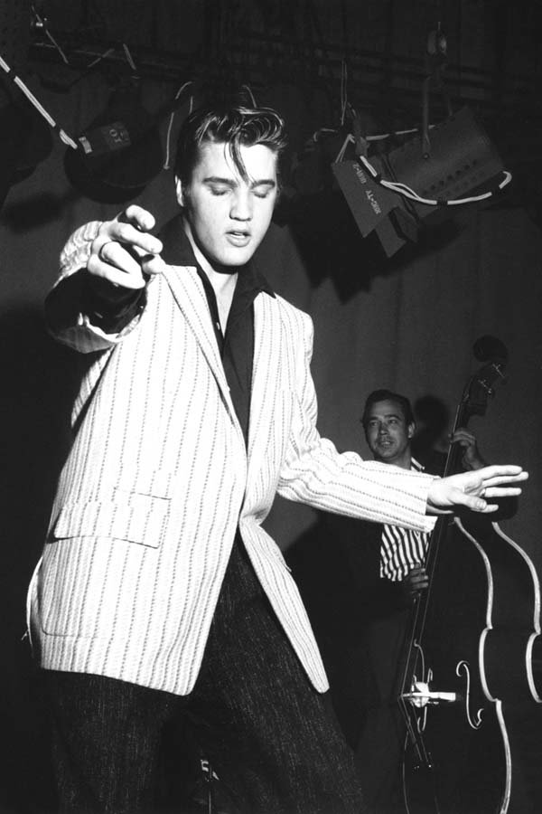

The King of Rock’n’Roll
Elvis Presley blev født ind i fattige vilkår d. 8 januar 1935 i familiens lille hus i Tupelo, Mississippi. Hans musikinteresse fornemmede forældrene hurtigt og i 11 års fødselsdagsgave fik Elvis en guitar, inden familien flyttede til Memphis.
Guitaren viste sig at være en fremragende ide, for siden erobrede Elvis både R&B, Country og Rock-genren. Forinden han brød igennem med musikken nåede Elvis dog forskellige jobs, bl.a. som lastbilchauffør. Senere i sin karriere prøvede han sig også af som skuespiller med blandet succes.
Numre som "Suspicious Minds" & "Jailhouse Rock" er blandt nogle af Elvis' største hits. Du kan høre dem og flere her til højre via. Spotify.
"Before Elvis, there was nothing"
- John Lennon


